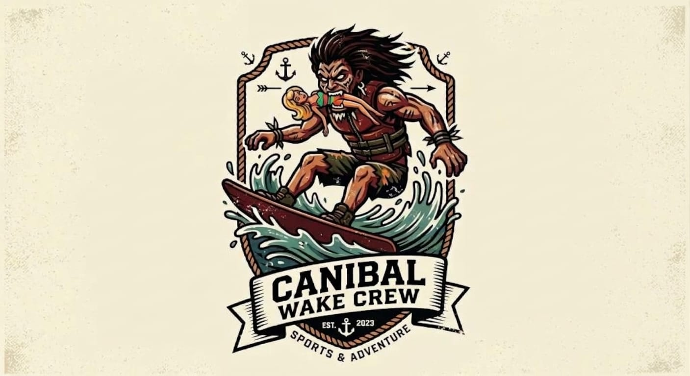

Guia prático para quem está começando no wakeboard
EST. 2023 · Sports & Adventure · CBL
Circuito fechado, sentido horário, 5 torres.
Aqui você aprende o que ninguém te conta antes de entrar na água.
O tamanho varia com seu peso e altura. Pranchas maiores são mais estáveis — ideais para iniciantes.
Obrigatório na pista. Além da segurança, ajuda a flutuar depois de uma queda.
O cabo que liga você ao circuito. Segure firme com as duas mãos no começo.
Recomendado no início. Obstáculos de cabeça não combinam com aprendizado.
Proteção contra arranhões e o sol. Roupa justa evita resistência na água.
Regular: pé esquerdo na frente. Goofy: pé direito na frente. Não sabe qual é o seu? Pense em qual pé você chutaria uma bola — esse fica atrás.
Pés na largura dos ombros, joelhos levemente dobrados. Não trave os joelhos, eles são seu amortecedor.
Duas mãos, palmas para baixo, cotovelos próximos do corpo. Não puxa o cabo — deixa ele puxar você.
Agachado, joelhos dobrados, prancha apontada pra frente, cabo esticado. Pronto pra sair.
Agache fundo com joelhos dobrados antes do cabo puxar
Deixa o cabo te puxar — não força o corpo pra frente
Olha pra frente, não pra baixo nem pra prancha
Primeiros metros: deixa a prancha plana na água, sem inclinar
Não tenta ficar em pé antes do cabo estar esticado
Não trava os joelhos — cai na primeira ondinha
Antes de pensar em obstáculo, o objetivo é completar voltas inteiras sem cair. Parece simples, não é.
Se o cabo afrouxar, você perde velocidade e cai. Fique sempre na tensão certa — nem puxa, nem deixa folgar.
Nas polias, o cabo muda de direção. Dobra os joelhos e deixa o corpo seguir — não resiste.
Sempre olha pra onde você vai chegar, não pra onde está. O corpo segue o olhar.
Deixa o cabo trabalhar nas curvas. Resistir desequilibra e cansa o braço à toa.
Circuito fechado no sentido horário ↻, com 5 torres. Passe por fora das boias nas curvas — quanto mais próximo da boia, mais fechada a curva e mais difícil de controlar.
Ponto de saída. Agache, espera o cabo esticar e deixa ele te puxar.
Rampa lateral esquerda. Praticamente não cava — só direciona a prancha pra cima da rampa e o cabo faz o trabalho.
Slide reto. Cavada progressiva bem leve partindo de baixo do cabo, entra neutro em cima — sem cavar no obstáculo. Solte uma mão ao entrar: alinha o corpo para a margem e evita rotação dos ombros. Usar a posição debaixo do cabo como referência fixa garante sempre a mesma abordagem.
Rampa de salto. Começa pelo menor. Pequena cavada heelside antes pra ganhar velocidade, depois entra neutro na subida. Solte uma mão ao subir: mantém os ombros alinhados e o corpo estável. Olha pra frente no ar.
Obstáculo atravessado. Exige timing na abordagem — entra no ângulo certo ou escorrega pra fora.
Corrimão curvo. Bom pra treinar BS slides. Entra com o ombro da frente apontado pro obstáculo.
Telhado. Obstáculo de nível intermediário/avançado. Não tente antes de estar confortável nos outros.
Obstáculo na torre 3 (ponta direita). Serve para treinar olie e saltos simples passando por cima.
No CBL o circuito é horário. Regular e Goofy têm abordagens diferentes nas curvas.
Pé esquerdo na frente
Pé direito na frente
Curvas normais: cavada suave, joelhos dobrados absorvendo — não força, deixa o cabo trabalhar
Antes de obstáculo: solta a cavada uns 2 metros antes, entra neutro em cima do obstáculo
Incliner: praticamente não cava — só direciona a prancha, o cabo já te leva por cima
Kicker: pequena cavada heelside antes pra ganhar velocidade, neutro na subida
Flat bar: cavada progressiva bem leve, partindo sempre de baixo do cabo — entra neutro em cima, sem cavar. Usar a posição debaixo do cabo como referência fixa garante sempre a mesma abordagem
Uma mão no obstáculo: solte uma mão do handle ao entrar — alinha o corpo para a margem, evita que os ombros girem com o cabo e facilita buscar equilíbrio com os joelhos flexionados. Com as duas mãos, os ombros são puxados para frente forçando rotação e desequilíbrio
Nunca solte o handle dentro da pista — cabo solto vira chicote
Caia de lado, nunca de frente — protege o rosto e os joelhos
Se vai cair, solta o handle e caia longe do obstáculo
Espera o cabo afundar antes de nadar de volta ao deck
Quem caiu fica na lateral — nunca no meio do percurso
Ao passar na frente do dock start e ver alguém saindo: vá para a rampa (incliner) e evite a flat bar — o tranco de quem inicia pode folgar o cabo ou variar a velocidade e te desestabilizar em cima do obstáculo
Na dúvida num obstáculo: primeira vez sem trick, só passar por cima
Conteúdo bom de quem manda bem no wake.
Playlist oficial para iniciantes — feita pelo próprio CBL 🇧🇷
Wakeboarder brasileira — dicas, tricks e riding
Conteúdo internacional de wakeboard
Wakeboarder internacional — tricks e riding
Wakeboarder internacional — nível de referência